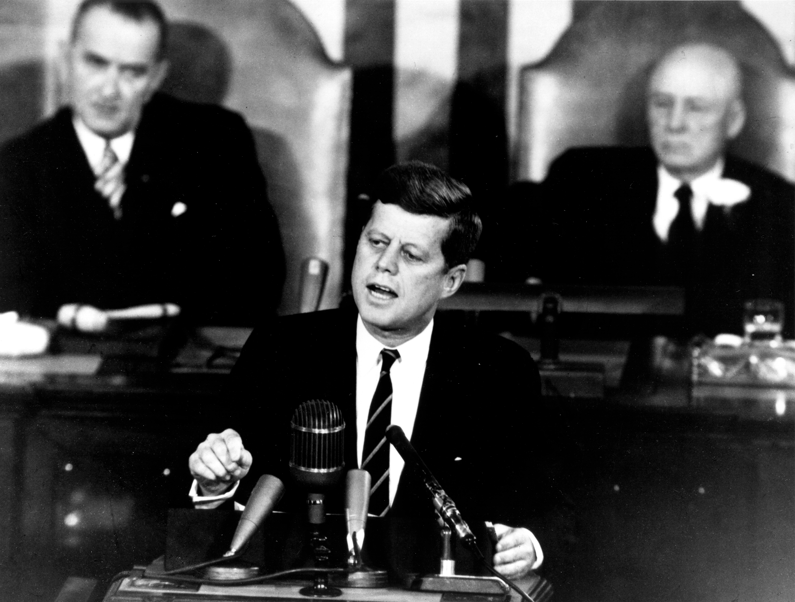

originated during the Eisenhower administration. In a series of mid-1950s articles in Collier's magazine, Wernher von Braun had popularized the idea of a manned expedition to the Moon to establish a lunar base. A manned Moon landing posed several daunting technical challenges to the US and USSR. Besides guidance and weight management, atmospheric re-entry without ablative overheating was a major hurdle. After the Soviet Union's launch of Sputnik, von Braun promoted a plan for the United States Army to establish a military lunar outpost by 1965.
After the early Soviet successes, especially Yuri Gagarin's flight, US President John F. Kennedy looked for a US project that would capture the public imagination. He asked Vice President Lyndon Johnson to make recommendations on a scientific endeavor that would prove US world leadership. The proposals included non-space options such as massive irrigation projects to benefit the Third World. The Soviets, at the time, had more powerful rockets than the United States, which gave them an advantage in some kinds of space mission.
Advances in US nuclear weapon technology had led to smaller, lighter warheads, and consequently, rockets with smaller payload capacities. By comparison, Soviet nuclear weapons were much heavier, and the powerful R-7 rocket was developed to carry them. More modest potential missions such as flying around the Moon without landing or establishing a space lab in orbit (both were proposed by Kennedy to von Braun) were determined to offer too much advantage to the Soviets, since the US would have to develop a heavy rocket to match the Soviets. A Moon landing, however, would capture world imagination while functioning as propaganda.
ONE
GIANT
LEAP
Plans for manned
Moon exploration
Moon exploration

Wernher von Braun

Yuri Gagarin in Warsaw, 1961

John F. Kennedy speaking to congress, 1961
Johnson had championed the US manned space program ever since the Sputnik scare, sponsoring the legislation which created NASA when he was in the Senate in 1958. When Kennedy asked him in 1961 to research the best manned space achievement to counter the Soviets' lead, Johnson responded that the US had an even chance of beating the USSR to a manned lunar landing, but not for anything less. Kennedy seized on Apollo as the ideal focus for efforts in space. He ensured continuing funding, shielding space spending from the 1963 tax cut, but diverting money from other NASA scientific projects. This last dismayed NASA's leader, James E. Webb, who perceived the need for NASA's support from the scientific community.
The Moon landing required development of the large Saturn V launch vehicle, which achieved a perfect record of zero catastrophic failures or launch vehicle-caused mission failures, in thirteen launches.
For the program to succeed, its proponents would have to defeat criticism from politicians on the left, who wanted more money spent on social programs, and on those on the right, who favored a more military project. By emphasizing the scientific payoff and playing on fears of Soviet space dominance, Kennedy and Johnson managed to swing public opinion: by 1965, 58 percent of Americans favored Apollo, up from 33 percent two years earlier. After Johnson became President in 1963, his continuing defense of the program allowed it to succeed in 1969, as Kennedy planned.
The Moon landing required development of the large Saturn V launch vehicle, which achieved a perfect record of zero catastrophic failures or launch vehicle-caused mission failures, in thirteen launches.
For the program to succeed, its proponents would have to defeat criticism from politicians on the left, who wanted more money spent on social programs, and on those on the right, who favored a more military project. By emphasizing the scientific payoff and playing on fears of Soviet space dominance, Kennedy and Johnson managed to swing public opinion: by 1965, 58 percent of Americans favored Apollo, up from 33 percent two years earlier. After Johnson became President in 1963, his continuing defense of the program allowed it to succeed in 1969, as Kennedy planned.
1. Plans for manned Moon exploration originated during the Eisenhower administration. In a series of mid-1950s articles in Collier's magazine, Wernher von Braun had popularized the idea of a manned expedition to the Moon to establish a lunar base. A manned Moon landing posed several daunting technical challenges to the US and USSR. Besides guidance and weight management, atmospheric re-entry without ablative overheating was a major hurdle. After the Soviet Union's launch of Sputnik, von Braun promoted a plan for the United States Army to establish a military lunar outpost by 1965.
2. After the early Soviet successes, especially Yuri Gagarin's flight, US President John F. Kennedy looked for a US project that would capture the public imagination. He asked Vice President Lyndon Johnson to make recommendations on a scientific endeavor that would prove US world leadership. The proposals included non-space options such as massive irrigation projects to benefit the Third World. The Soviets, at the time, had more powerful rockets than the United States, which gave them an advantage in some kinds of space mission.
2. After the early Soviet successes, especially Yuri Gagarin's flight, US President John F. Kennedy looked for a US project that would capture the public imagination. He asked Vice President Lyndon Johnson to make recommendations on a scientific endeavor that would prove US world leadership. The proposals included non-space options such as massive irrigation projects to benefit the Third World. The Soviets, at the time, had more powerful rockets than the United States, which gave them an advantage in some kinds of space mission.
3. Advances in US nuclear weapon technology had led to smaller, lighter warheads, and consequently, rockets with smaller payload capacities. By comparison, Soviet nuclear weapons were much heavier, and the powerful R-7 rocket was developed to carry them. More modest potential missions such as flying around the Moon without landing or establishing a space lab in orbit (both were proposed by Kennedy to von Braun) were determined to offer too much advantage to the Soviets, since the US would have to develop a heavy rocket to match the Soviets. A Moon landing, however, would capture world imagination while functioning as propaganda.
Credits: